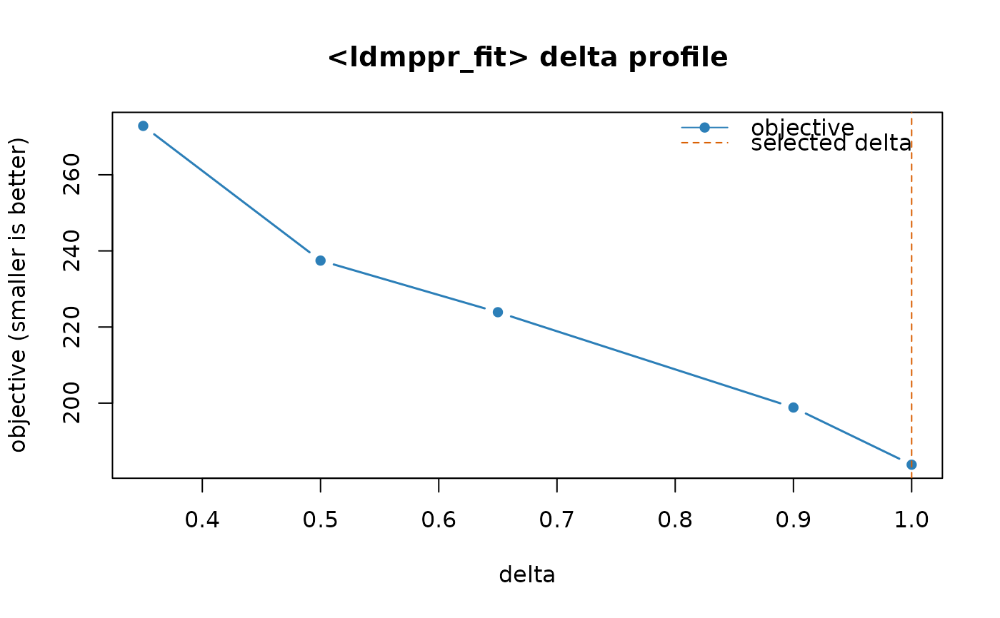

Estimate point process parameters using log-likelihood maximization
Source:R/estimate_process_parameters.R
estimate_process_parameters.RdEstimate spatio-temporal point process parameters by maximizing the (approximate)
full log-likelihood using nloptr.
Usage
estimate_process_parameters(
data,
process = c("self_correcting"),
grids,
budgets,
parameter_inits = NULL,
delta = NULL,
parallel = FALSE,
num_cores = max(1L, parallel::detectCores() - 1L),
set_future_plan = FALSE,
strategy = c("local", "global_local", "multires_global_local"),
global_algorithm = "NLOPT_GN_CRS2_LM",
local_algorithm = "NLOPT_LN_BOBYQA",
starts = list(global = 1L, local = 1L, jitter_sd = 0.35, seed = 1L),
finite_bounds = NULL,
refine_best_delta = TRUE,
verbose = TRUE
)Arguments
- data
a data.frame or matrix. Must contain either columns
(time, x, y)or(x, y, size). If a matrix is provided without time, it must have column namesc("x","y","size").- process
type of process used (currently supports
"self_correcting").- grids
a
ldmppr_gridsobject specifying the integration grid schedule (single-level or multi-resolution). The integration bounds are taken fromgrids$upper_bounds.- budgets
a
ldmppr_budgetsobject controlling optimizer options for the global stage and local stages (first level vs refinement levels).- parameter_inits
(optional) numeric vector of length 8 giving initialization values for the model parameters. If
NULL, defaults are derived fromdataandgrids$upper_bounds.- delta
(optional) numeric scalar or vector. Used only when
datadoes not containtime(i.e., data has(x,y,size)).If
length(delta) == 1, fits the model once usingpower_law_mapping(size, delta).If
length(delta) > 1, performs a delta-search by fitting the model for each candidate value and selecting the best objective. Ifrefine_best_delta = TRUEand multiple grid levels are used, the best delta is refined on the remaining (finer) grid levels.
If
dataalready containstime,deltais ignored whenlength(delta)==1and is an error whenlength(delta)>1.- parallel
TRUEorFALSEspecifying furrr/future to parallelize either: (a) over candidatedeltavalues (whenlength(delta) > 1), and/or (b) over local multi-start initializations (whenstarts$local > 1), and/or (c) over global restarts (whenstarts$global > 1).- num_cores
number of workers to use when
set_future_plan = TRUE.- set_future_plan
TRUEorFALSE, temporarily setsfuture::plan(multisession, workers = num_cores)and restores the original plan on exit.- strategy
character string specifying the estimation strategy:
"local": local optimization only (single-level or multi-level polish)."global_local": global optimization then local polish (single grid level)."multires_global_local": multi-resolution (coarsest uses global+local; refinements use local only).
- global_algorithm, local_algorithm
NLopt algorithms to use for the global and local optimization stages, respectively.
- starts
a list controlling restart and jitter behavior:
global: integer, number of global restarts at the first/coarsest level (default 1).local: integer, number of local multi-starts per level (default 1).jitter_sd: numeric SD for jittering (default 0.35).seed: integer base seed (default 1).
- finite_bounds
(optional) list with components
lbandubgiving finite lower and upper bounds for all 8 parameters. IfNULL, bounds are derived fromparameter_inits. Global algorithms and select local algorithms in NLopt require finite bounds.- refine_best_delta
TRUEorFALSE. IfTRUEandlength(delta) > 1, performs refinement of the bestdeltaacross additional grid levels (if available).- verbose
TRUEorFALSEindicating whether to show progress of model estimation.
Value
an object of class "ldmppr_fit" containing the best nloptr fit and
(optionally) stored fits from global restarts and/or a delta search.
Details
For the self-correcting process, arrival times must lie on \((0,1)\) and can be
supplied directly in data as time, or constructed from size
via the gentle-decay (power-law) mapping power_law_mapping using
delta. When delta is a vector, the model is fit for each candidate
value and the best objective is selected.
This function supports multi-resolution estimation via a ldmppr_grids
schedule. If multiple grid levels are provided, the coarsest level may use a global
optimizer followed by local refinement, and subsequent levels run local refinement only.
References
Møller, J., Ghorbani, M., & Rubak, E. (2016). Mechanistic spatio-temporal point process models for marked point processes, with a view to forest stand data. Biometrics, 72(3), 687-696. doi:10.1111/biom.12466 .
Examples
# Load example data
data(small_example_data)
# Define grids and budgets
ub <- c(1, 25, 25)
g <- ldmppr_grids(upper_bounds = ub, levels = list(c(10,10,10)))
b <- ldmppr_budgets(
global_options = list(maxeval = 150),
local_budget_first_level = list(maxeval = 50, xtol_rel = 1e-2),
local_budget_refinement_levels = list(maxeval = 25, xtol_rel = 1e-2)
)
# Estimate parameters using a single delta value
fit <- estimate_process_parameters(
data = small_example_data,
grids = g,
budgets = b,
delta = 1,
strategy = "global_local",
global_algorithm = "NLOPT_GN_CRS2_LM",
local_algorithm = "NLOPT_LN_BOBYQA",
starts = list(global = 2, local = 2, jitter_sd = 0.25, seed = 1),
verbose = TRUE
)
#> Using default starting values (parameter_inits) since none were provided.
#> Initial values: 7.185, 0.01, 0.03963, 2.369, 2, 0.5, 2.369, 0.05
#> Estimating self-correcting process parameters
#> Strategy: global_local
#> Delta: 1
#> Grids: 1 level(s)
#> Local optimizer: NLOPT_LN_BOBYQA
#> Global optimizer: NLOPT_GN_CRS2_LM
#> Starts: global=2, local=2, jitter_sd=0.25, seed=1
#> Parallel: off
#> Step 1/2: Preparing data and objective function...
#> Prepared 121 points.
#> Done in 0.0s.
#> Step 2/2: Optimizing parameters...
#> Single level (grid 10x10x10)
#> Global search: 2 restart(s), then local refinement.
#> Local multi-start: 2 start(s).
#> Completed in 0.1s.
#> Best objective: 214.69035
#> Finished. Total time: 0.1s.
coef(fit)
#> [1] 0.411049550 6.677597517 0.008525942 4.054852315 1.362062458 0.000000000
#> [7] 0.000000000 0.003039611
logLik(fit)
#> 'log Lik.' -214.6903 (df=8)
# \donttest{
# Estimate parameters using multiple delta values (delta search)
g2 <- ldmppr_grids(upper_bounds = ub, levels = list(c(8,8,8), c(12,12,12)))
fit_delta <- estimate_process_parameters(
data = small_example_data, # x,y,size
grids = g2,
budgets = b,
delta = c(0.35, 0.5, 0.65, 0.9, 1.0),
parallel = TRUE,
set_future_plan = TRUE,
num_cores = 2,
strategy = "multires_global_local",
starts = list(local = 1),
refine_best_delta = FALSE,
verbose = FALSE
)
plot(fit_delta)

# }